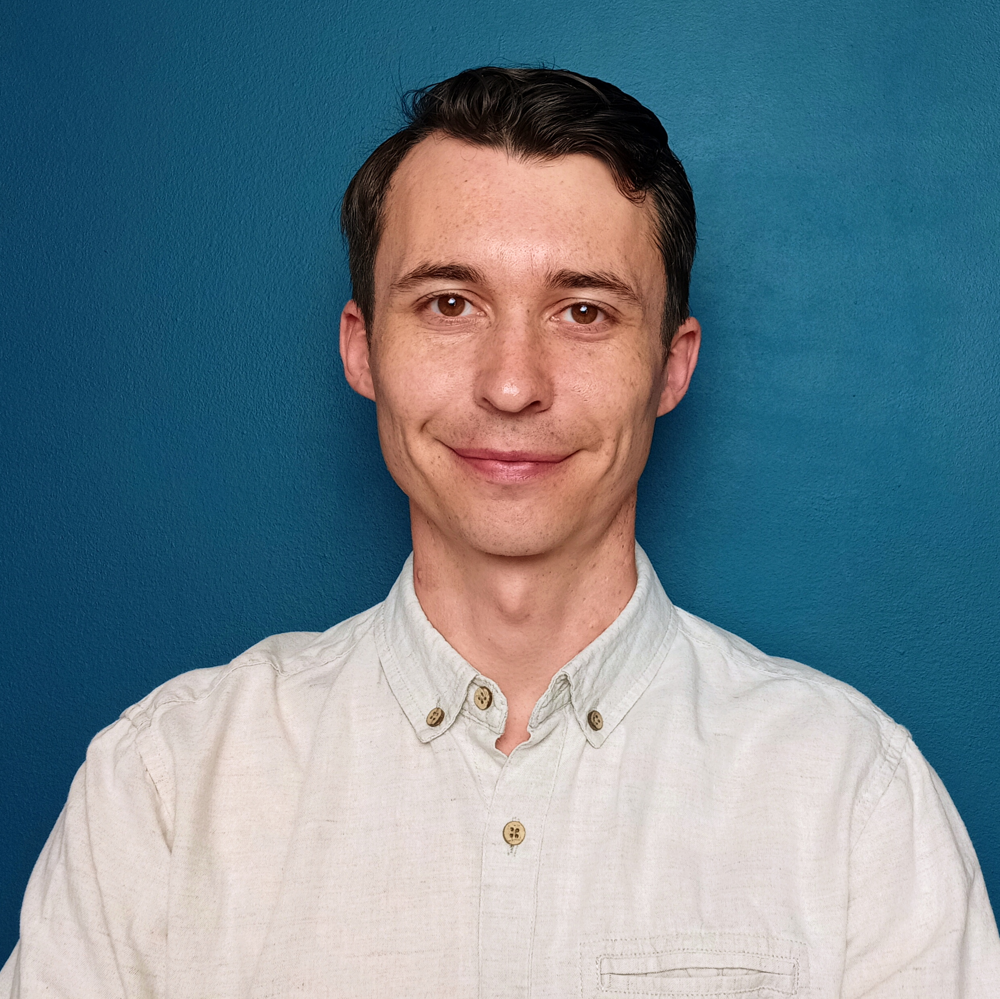

Zachęcamy do zapoznania się z informacjami o nas. Kliknij w wybraną osobę, aby poznać szczegóły:
Specjalizacja: Terapia lęku, depresji, osoby dorosłe, młodzież
O mnie: W swojej praktyce koncentruję się na skutecznym stosowaniu technik poznawczo-behawioralnych, pomagając dorosłym i młodzieży.
Dłuższy opis/Edukacja: Ukończyłam jednolite studia magisterskie w 2015 r. na specjalności kliniczno-sądowej. Dodatkowo kontynuowałam kształcenie na studiach podyplomowych w zakresie „Psychogeriatrii z elementami neuropsychologii” w Medycznym Centrum Kształcenia Podyplomowego Uniwersytetu Jagiellońskiego. Jestem członkinią Polskiego Towarzystwa Terapii Poznawczej i Behawioralnej. Obecnie doskonalę swoje kompetencje w trakcie uczęszczania do szkoły psychoterapii poznawczo-behawioralnej SP USWPS. Posiadam wieloletnie doświadczenie w pracy z różnymi grupami wiekowymi zarówno w terapii grupowej, jak i indywidualnej. Moje podejście opiera się na empiryzmie i empatycznej profesjonalnej współpracy, tworząc bezpieczną przestrzeń dla rozwiązywania trudności związanych m.in. z lękiem, depresją, zaburzeniami adaptacyjnymi, radzeniem sobie ze stresem i innymi trudnościami natury psychologicznej. W roli psychologa skupiam się na pomocy w odkrywaniu nowych sposobów myślenia i adaptacyjnych strategii radzenia sobie z problemami. Współpracuję z otwartością, kładąc nacisk na psychoedukację i korzystając z empirycznie potwierdzonych metod. Przez ostatnie lata zdobywałam doświadczenie w różnych placówkach pomocy psychologicznej, świadcząc wsparcie indywidualne, pracując w środowisku, angażując się w prace z rodzinami pacjentów oraz prowadząc zajęcia grupowe. Moje holistyczne podejście i zaangażowanie pozwalają dostosować terapię do indywidualnych potrzeb każdego klienta. W wolnym czasie rozwijam zainteresowania kinem, fantastyką naukową, malarstwem i ogrodnictwem.
Dodatkowe informacje: Pracuję pod stałą superwizją.

Specjalizacja: Osoby do wczesnej dorosłości, zaburzenia lękowe, OCD
O mnie: Prowadzę terapię indywidualną, wykorzystując metody CBT. Moim głównym celem jest poprawa jakości życia klienta.
Dłuższy opis/Edukacja: Ukończyłem jednolite studia magisterskie na kierunku Psychologia o specjalności kliniczno sądowej oraz szkołę psychoterapii poznawczej i behawioralnej ukończonej certyfikatem PTTPB nr 1044. W trakcie swojej pracy koncentruje się na dobrym zrozumieniu drugiej osoby i trudności, z którymi się zmaga. Przywiązuje szczególną wagę na czynniki, które podtrzymują problem. Dzięki temu mogę precyzyjnie dopasować strategię pomocy. Moim głównym celem jest zwiększenie jakości życia osoby, która korzysta z moich usług. Ważne jest dla mnie aby czas terapii był jak najlepiej wykorzystany, w oparciu o wartości szacunku oraz szczerości. W trakcie trwania ścieżki zawodowej miałem doświadczenia z osobami z każdego przedziału wiekowego, dlatego w trakcie udzielania nawet indywidualnej pomocy angażuje pozostałych członków systemu rodzinnego. Stąd głównie pracuje z dziećmi, młodzieżą oraz młodymi dorosłymi. Moja praca jest poddawana superwizji a swoją wiedzę i umiejętności nieustannie rozwijam, co wpływa pozytywnie na jakość mojej pracy. Osobiście jestem miłośnikiem przyrody oraz muzyki. Uważam kontakt z naturą za najlepszy relaks a grę na instrumencie jako świetny trening umysłu oraz przyjemną rozrywkę.
Dodatkowe informacje: Pracuję pod stałą superwizją.
Skorzystaj z darmowych materiałów, ćwiczeń i narzędzi, które pomogą Ci w pracy nad sobą.
NarzędziownikNapisz SMS lub email, aby umówić pierwszą wizytę. Pracujemy online oraz stacjonarnie.
Online / Gabinet: Przemyśl, ul. Moniuszki 3/3